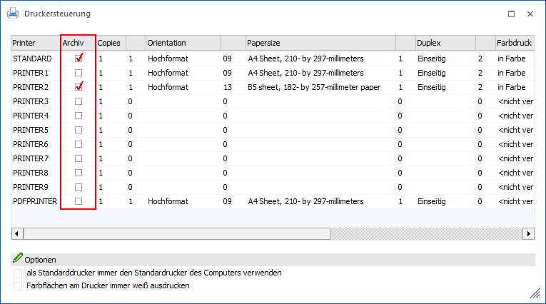

In der WinLine gibt es die Möglichkeit, bis zu 10 Drucker zu verwalten, wobei ein Drucker mit verschiedenen Einstellungen beliebig oft verwendet werden kann. Der Drucker "PDFPRINTER" ist fix vorgegeben und kann Ausgaben im PDF-Format erzeugen.
Die Druckersteuerung kann aus jeder WinLine Applikation heraus unter dem Menüpunkt…
1 Datei
1 Drucker
… aufgerufen werden. Mit Hilfe der Option "Archiv" kann definiert werden, ob eine automatische Archivierung stattfinden soll.
Hinweis
Im Standard wird bei einem Druck immer der STANDARD-Drucker verwendet. Dieses kann aber pro Formular übersteuert werden (über die Seiteneinstellungen des Formulars oder Hinterlegung des Steuerelements "Bestimmten Drucker verwenden").

Ø Archiv
Wird diese Option aktiviert, dann werden alle Ausdrucke, die auf diesen Drucker ausgegeben werden, automatisch archiviert.
Hinweis
Alle weiteren Einstellungen (z.B. welche Felder werden Beschlagwortet, wann wird analysiert, etc.) erfolgen im WinLine ADMIN (Menübereich "Archiv").